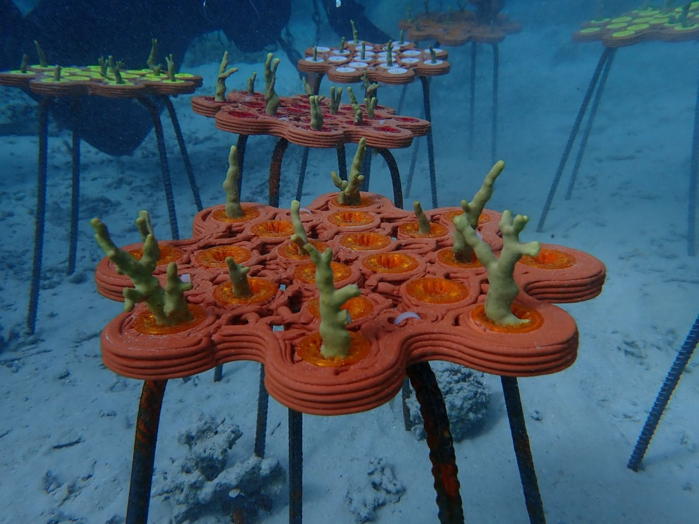
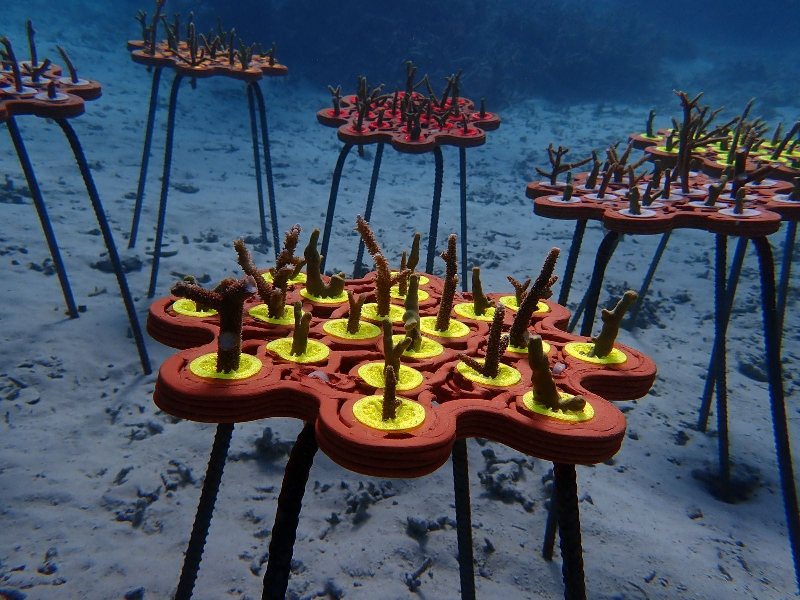
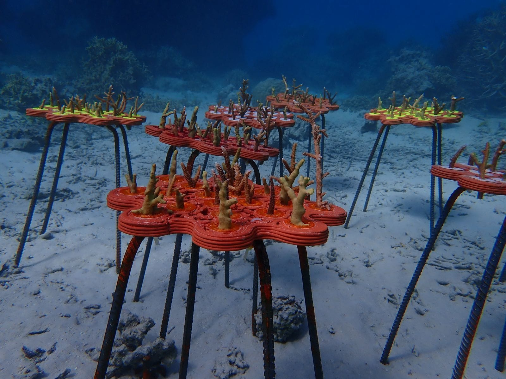

Ezri Tarazi
Ezri Tarazi earned his BDes in Industrial Design at Bezalel Academy of Art and Design in Jerusalem in 1990 and worked in Bezalel's R&D department (1990–1996). He chaired Bezalel's Industrial Design Department (1996–2004) and founded its Master's program in Industrial Design.
He co-founded the IDEO branch in Israel (1998–2002), was a partner in several tech startups, and founded d-Vision together with Keter Group (2005–2012). His studio specialises in strategic design, design thinking and products for industry. His work has been shown at the Museum of Modern Art and the Cooper Hewitt in New York, the Triennale in Milan and elsewhere.
At the Technion he chairs the Industrial Design graduate program in the Faculty of Architecture and Town Planning and founded the Design-Tech initiative in 2018. He has published two books on design and design thinking.
Keywords: Industrial design in the Fourth Industrial Revolution, Digital design and manufacturing, Design for the marine environment, Design for emergency medicine, Nature Centered Design, Design thinking
Interests: Design and culture, well-being and health, life-support systems.
3D-printed clay reefs (2019–)



Modular artificial reefs designed from scans of living reefs and printed in clay, installed in the Gulf of Eilat and in Fiji.